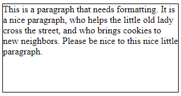
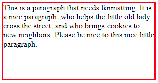
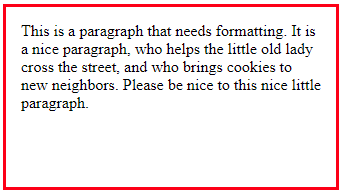

Are you still with me? If so, congrats! We are about to step it up a bit with CSS over the next few weeks, and learn some more HTML in the process. Let's see where things take us.
To understand CSS layout, you must grasp the concept that every HTML element is considered a box with the following four properties:
So, how can this "box" idea help us style our web pages?
Well, remember that CSS code works by first specifying an HTML element that you wish to change the appearance of. This is called the "selector."
Then you add the curly brackets to contain the style definitions. Each definition begins by naming a property of the HTML element, then giving that property a value.
Since every HTML element is a box, then you can style at least four properties of each element -- the content, the border, the padding, and the margin. Elements including images, paragraphs, headings, and semantic section names (nav, main, footer, etc.) all have these four properties and can thus be styled. For example, you can change the height and width of an HTML element (among lots of other things!).
p {
border: 1px solid black;
width: 500px;
height: 150px;
}

Notice the thin black border that designates the paragraph's "box." This is something I do when I want to see the element I'm styling: define a border style. On busy or large pages with lots of content, I might even temporarily add some color and make the border wider so the element stands out more:
p {
border: 3px solid red;
width: 500px;
height: 150px;
}

Now, when I look at this text box, I'm feeling claustrophobic: the text content bumps right up against the border, which makes me uncomfortable and anxious.
p {
border: 3px solid red;
width: 500px;
height: 150px;
padding: 15px;
}

Ah, that's better: there is now some "breathing room" inside the box, between the text content and the border.
Try adding a margin around your paragraph. How does that change the placement of the box?
In Chapter 13 Colors and Backgrounds, Jennifer Robbins describes how to create background images. Images placed in the background of the webpage allow you to create content that sits on top of the background image. There are many different ways to use background images as specified in Chapter 5.
The standard CSS property that you'll be working with is the background-image property and is generally formatted like this:
body {
background-image: url(mybackgroundimage.jpg);
}
It is important to take the readability (aka "legibility") of your text into account when using a background image. Sometimes you'll desperately want to use this cool image for your background, but when you use it you realize there are varying levels of light and dark within the image and that it will be very hard for you to be able to put any text content on top of the image that people would be able to read.